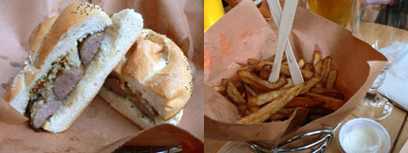

Soho Park
On Friday, my coworkers and I left right at 5:30 to enjoy beer and bratwurst at the gorgeous new Soho Park on Lafayette Street.
I’ve been wanting to go here since I walked past the construction months ago and wondered what crazy person was actually building a structure on a vacant lot in Soho. It seemed like a huge financial risk in this era of stores and restaurants closing before they even settle in.
I’m not sure this place will make it to its one-year anniversary, but I’m glad I went and I intend to go again. It’s the quirkiest and most appealing restaurant interior in the neighborhood, despite its uncomfortable furniture. It has huge windows looking out on Lafayette and Prince streets, and a modern fireplace that makes me feel extremely cozy and content. The draft beer and the service were good, the sausage was forgettable, and the fries were that elusively perfect combination of crispy and soggy:

If Soho Park had a happy hour special, I’d go every week for beer and french fries. As it is, the only special seems to be bratwurst and a pint for $11, which isn’t too expensive, but I don’t always want a bratwurst at that hour.
Soho Park 62 Prince St @ Lafayette (212) 219-2129
Comments
If I was on my high horse, I’d say that’s no way to eat a bratwurst, but I suppose it’s more in the German style than the Americanised way of doing it that we have out here. At least the beer was good!
Add a comment